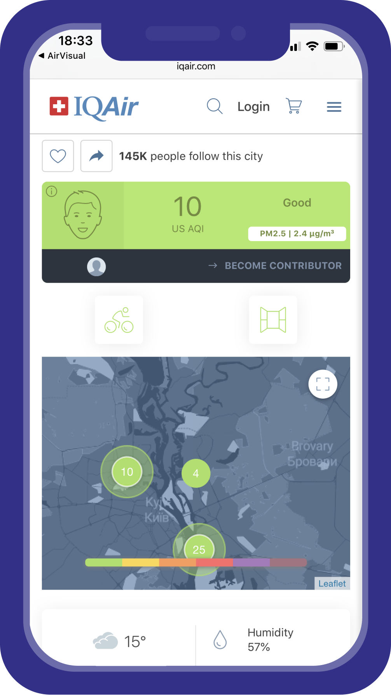

<link href="https://fonts.googleapis.com/css2?family=Montserrat+Alternates:ital,wght@0,100;0,200;0,300;0,400;0,500;0,600;0,700;0,800;0,900;1,100;1,200;1,300;1,400;1,500;1,600;1,700;1,800;1,900&display=swap" rel="stylesheet">
<link rel="stylesheet" href="./css/ecofacts-section.css">
<section class="ecofacts-section">
    <header class="header">
        <div class="header-logo">
            
        </div>
        <nav class="header-menu">
            <li class="header-menu-item active"><a href="">Урок 1</a></li>
            <li class="header-menu-item"><a href="">Урок 2</a></li>
            <li class="header-menu-item transparent"><a href="">Урок 3</a></li>
            <li class="header-menu-item transparent"><a href="">Урок 4</a></li>
            <li class="header-menu-item transparent"><a href="">Урок 5</a></li>
            <li class="header-menu-item transparent"><a href="">Екоекзамен</a></li>
            <li class="header-menu-item main"><a href="">Головна</a></li>
        </nav>
    </header>
    <main class="ecofacts__content">
        <div class="ecofacts__content-left">
            
        </div>
        <div class="ecofacts__content-right">
            <h4 class="ecofacts__content-title">Окей, а яким повітрям ми дихаємо зараз?</h4>
            <p class="ecofacts__content-text">
                Чи безпечно зараз у моєму району? На ці питання відповість сайт з якості повітря:<br><span class="ecofacts__content-text-blue">www.iqair.com</span><br>або телеграм-бот <span class="ecofacts__content-text-green">SaveEcoBot</span>
            </p>
        </div>
    </main>
    <footer class="ecofacts__footer">
        <div class="ecofacts__footer-block">
            <p class="ecofacts__footer-block-text">#ЗМІНИЗВИЧКУ</p>
            
        </div>
    </footer>
</section>